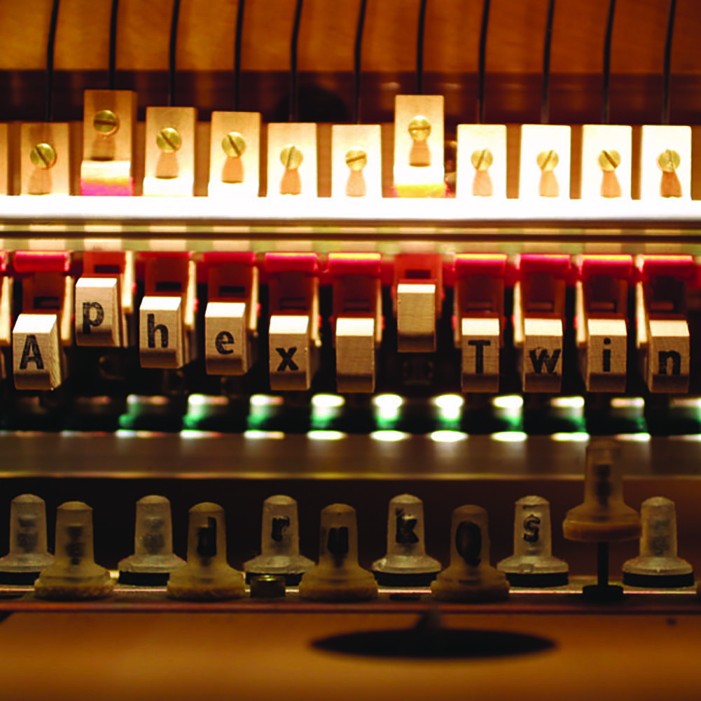
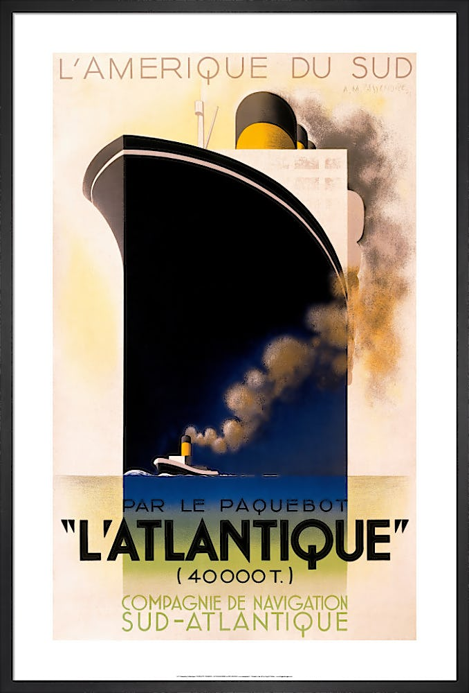
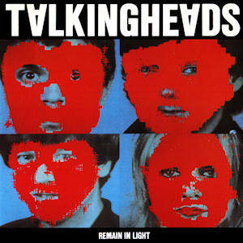
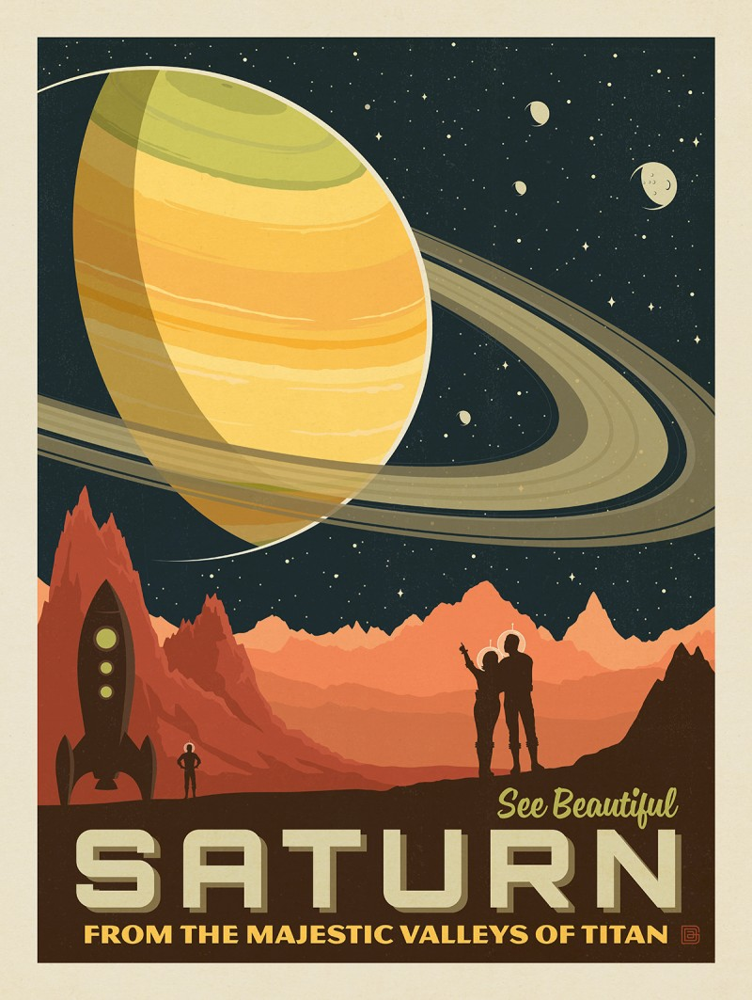
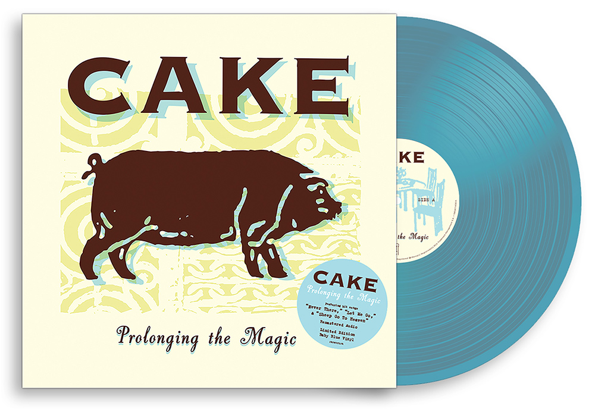

The beauty of slight misalignment.
Internet pages being (relatively) easily accessible is why I don't have a LinkedIn anymore. I go to... this university, with an undecided major. I enjoy the thought of a neuroscience or nutrition major, I applied with a nutrition intention, but frankly, I have no idea. I tend to say "...but I could accidentally get all the credits needed for a soviet studies major" when asked, because it's true—not that I'm not planning anything. I hate to be a pessimist, but I can mostly see a neuroscience minor in my future, even if a major would be a great surprise.
So far, I'm enjoying a biology 2 class--taking a lot of notes. A research introduction class is also more interesting than I first expected, I'm excited to look for and actually connect with research opportunities. And, of course, this class is turning out to be much more interesting than I first expected! Perhaps I'll get an opportunity to connect what I learn here with what I learn in a mass communication class I'm taking...
I have a decent, although surface-level, chunk of experience in relevant areas, but a lot of this will definitely be new to me, which I'm excited (and a little nervous) for. I have some experience in finding my way around HTML and CSS, as many sites I've used (and some I continue to use) involve customizable pages that allow the user to poke at more than just the WYSIWYG editor.
Over 5 years, I've spent a lot of time making, gathering feedback on, and redesigning informational documents that lay out the premise, rules, and results of online games. Lately, I've been interested in the Web Content Accessibility Guidelines (WCAG), and I offered personal feedback centering on it for a stint. I have a non-professional art background involving both digital and "traditional" art, although not usually in the informational sense—but composition is definitely something I like to focus on in analysis, visual art and visual design alike. I enjoy picking apart, analyzing, criticizing, and understanding how art and design works (what makes one feel a certain way, what draws the eye, what emphasizes or de-emphasizes a subject, etc).
I hope to learn my way around HTML and CSS at least a smidge better, more formal ways of applying knowledge I've gained through analysis, and a deeper understanding of how writing and design work together.

CAKE's Prolonging the Magic
I don't think good design always panders to the audience—sometimes making everything fit what your audience says they want, or making everything easiest for an audience at first glance, is not what is best for the project. Personally, I've had to reconcicle with requests to make something look less imposing, knowing that doing so would make important information easily ignorable. Even personally abstaining from the majority of social media sites, I find it very interesting how many platforms seem to... coalesce into a single, universal UI style—most nobably with Meta taking over a number of them, but also to make even those that aren't Meta-owned more approachable to the average user who comes from such sites.
From an informative and digestion-of-information focus, hierarchy is important to me. Something I often see is the overuse of bold, underlined, red text—anything meant to draw attention—such that it blends into the background and becomes easily ignored noise. In paintings, accent colors stand out the most—if it becomes 40%+ of your piece, it's no longer an accent color, and becomes less shocking to the audience.
I feel that good design doesn't just prioritize the audience, but prioritizes the message, and utility of that message. If you want someone to do something, how will this make them do it? If you want someone to feel something, how, and to what degree, will this make them feel that? If you want someone to know something, what will they know first, and what will they remember last? This all depends on what the design is for, of course—advertisement poster, interactive social media, archive page, searchable index.




The beauty of slight misalignment.
Oh goodness, I truly do not know. I love research—I love learning new things, finding ways to analyze those things, and then finding out how to communicate what came of that analysis. I've been vaguely interested in science communication as a focus, which is definitely something this class could help me with. I enjoy what I find mentally stimulating, as most people do.
I like to think that it's innate, and I wasn't influenced by anyone or anything, but I also think it'd be impossible to deny that my family's strange health experiences have probably nudged me a bit more toward a health sciences lane of interest. Overall, I just like learning, and I think a job that would keep me learning and thinking—be it in historical analysis or scientific research—would be delightful.
generated by Pitt Fuego
Why make a fire when you can light a spark?